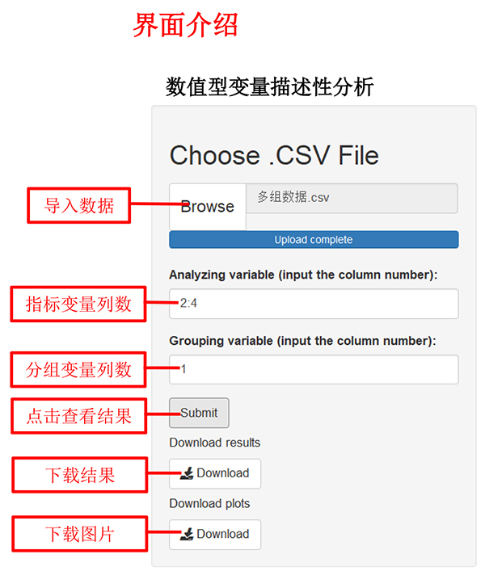
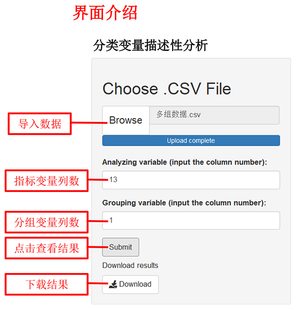
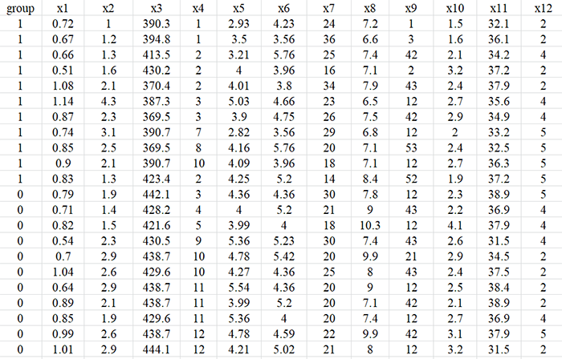
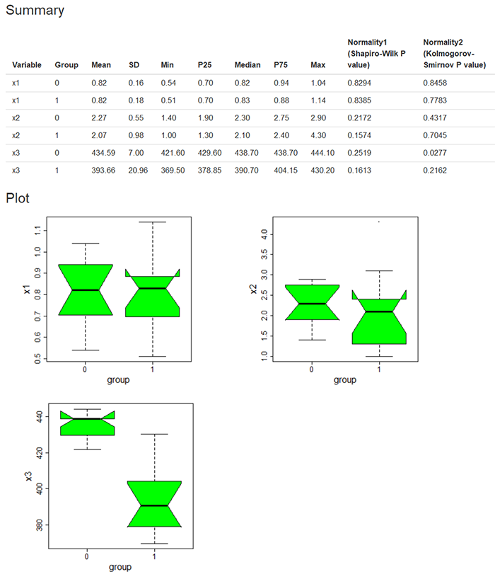
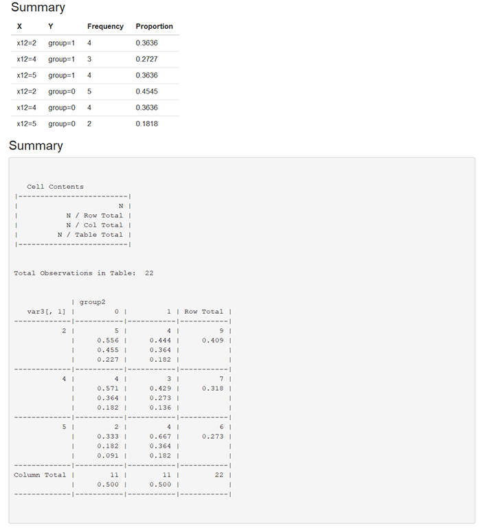

| 点击此处进行数值变量分析 | 点击此处进行分类变量分析 |
|  |  |
| 一、数据格式 | 一、数据格式 |
|  | |
| 注： 1、导入数据格式为“.csv”，数据中避免中文、空格或特殊字符 2、数据变量名必须为英文、阿拉伯数字或下划线的组合 3、指标变量（Analyzing variable）可以输入多列，以英文状态下的逗号或冒号分隔，如：2,3,4或2:4 4、导入数据后，各变量所对应的列数可在输出界面显示和查询 |
注： 1、导入数据格式为“.csv”，数据中避免中文、空格或特殊字符 2、数据变量名必须为英文、阿拉伯数字或下划线的组合 3、指标变量（Analyzing variable）可以输入多列，以英文状态下的逗号或冒号分隔，如：2,3,4或2:4 4、导入数据后，各变量所对应的列数可在输出界面显示和查询 |
| 二、输出结果展示 | 二、输出结果展示 |
| 输出结果包括均值、标准差、最小值、第一四分位数、中位数、第三四分位数、正态性检验结果（最多展示前十行）。下载的表格中，提供所有数值型指标变量的描述性分析结果。 示例如下： |
输出结果包括频数、行百分比、列百分比、总百分比，同SAS结果（最多展示前十行）。下载的表格中，提供所有分类型指标变量的频数和行百分比。 示例如下： |
|  |  |